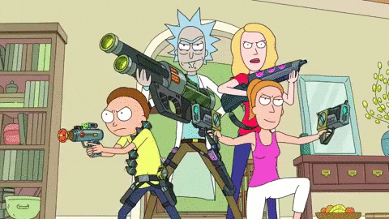

League of Legends is the first in a series of games
developed by Riot Games. While development
started earlier, players first got their hands on
League of Legends back in 2009.
The game is primarily a five-vs-five MOBA
(Multiplayer Online Battle Arena) game that
combines fast-paced gameplay with strategy, character
development, itemization
choices, and mechanically intense team fighting.
The game take place in the world of Runeterra, which consists of the supercontinent Valoran made up of the
many different in-game nations as well as the continent of Ionia and the archipelago islands of Bilgewater
and the Shadow Isles. Runeterra is also known as "Magic Earth" and shares connections with otherworldly
plains including the Void.
A thousand years prior to the current time period of the game, "World Runes' began appearing across the
world, each containing an immeasurable amount of pure magical energy. Tribes began collecting these runes
and abusing their powers, eventually resulting in the "Rune Wars" which ended up almost destroying Valoran
and corrupted the world with hidden magical energies.
After witnessing the once-grand city of Icathia fall to the powers of a World Rune, arcane sorcerer Ryze
became determine to prevent the powers of the runes from ever destroying Runeterra and started an endless
(we're talking centuries) journey to collect them. Icathia's fall also affected Kassadin and Malzahar,
corrupting both humans with the power of the void.
Runeterra is made up of several smaller nations and islands, each with their own tribes, cultures, armies,
and leaders. With every champion hailing from different locations, there's a lot of intertwining between the
different places.
Demacia and Noxus are the two biggest nations and can be remembered as "good guys vs. bad guys." Demacia is
ruled by the Jarvans, a family of kings throughout the generations, and is home to valiant warriors such as
Poppy, Garen, Xin Zhao, and Lux. Demacia's magical protector, Galio, is awoken whenever there is a
disruption is the previously mentioned World Runes.
Noxus, on the other hand, are power-hungry and believe power and strength are the most important values one
can have. It is ruled by the Grand Tactician Swain, with Darius acting as the right-hand man. Noxus is
responsible for the war on Ionia which, along with claiming countless innocent lives, worsened relationships
between the two nations.
Also included in Runeterra is Bilgewater, the nautical hub famed for its pirates, Shurima, the empire city in the sands, Ionia, the nation filled with spiritual and mystical power, the Shadow Isles, where undead souls have reclaimed the land and the Freljord, where the harsh icy land has been split into three different tribes.
Rick and Morty is a television show. After having been missing for nearly 20 years, Rick Sanchez suddenly arrives at daughter Beth's doorstep
to move in with her and her family. Although Beth welcomes Rick into her home, her husband, Jerry, isn't
as happy about the family reunion. Jerry is concerned about Rick, a sociopathic scientist, using the garage
as his personal laboratory. In the lab, Rick works on a number of sci-fi gadgets, some of which could be
considered dangerous. But that's not all Rick does that concerns Jerry. He also goes on adventures across
the universe that often involve his grandchildren, Morty and Summer.
